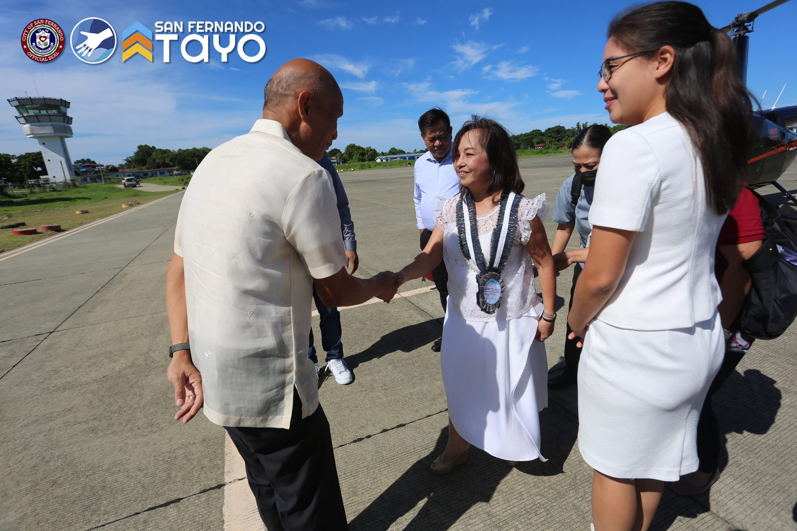
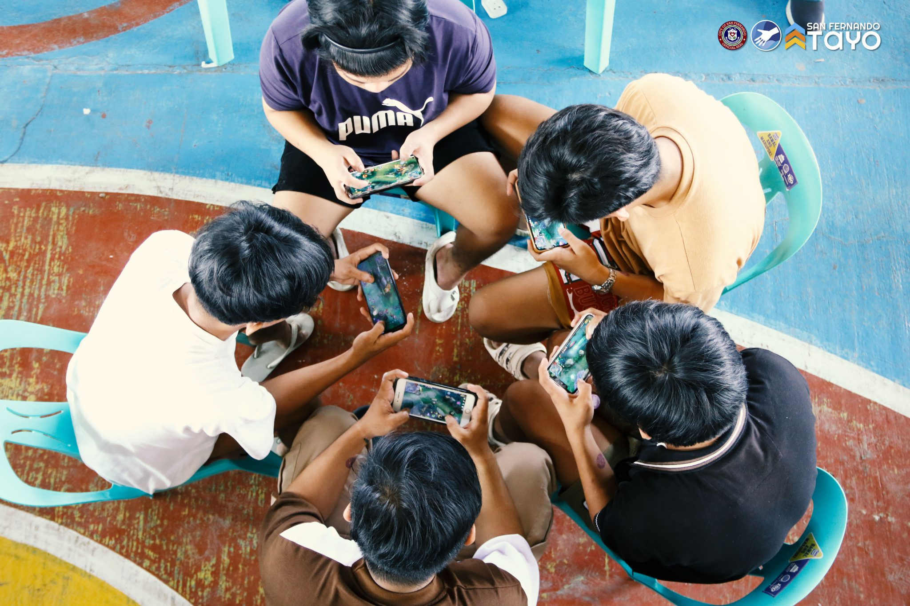
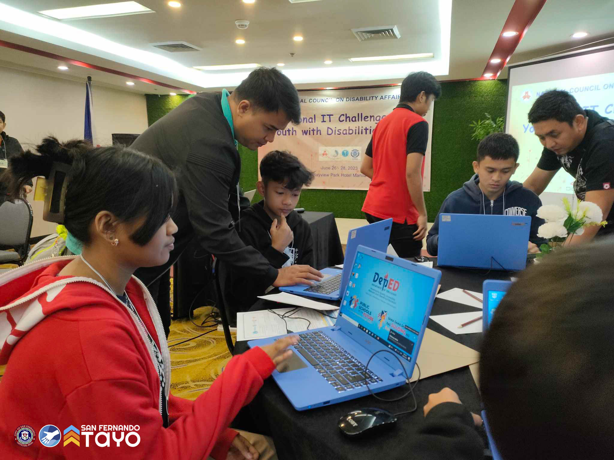

OVERVIEW
San Fernando City, officially the City of San Fernando (Ilocano: Siudad ti San Fernando; Filipino: Lungsod
ng San
Fernando), is a 3rd class component city and capital of the province of La Union, Philippines. According to
the 2020
census, it has a population of 125,640 people.[3]
San Fernando serves as a gateway to trade, commerce, culture and heritage of Ilocandia. The city is the
financial,
industrial, and political center of the province and the regional capital of Region 1 (Ilocos Region),
hosting regional
offices of national government agencies and some of the region's educational and medical institutions. The
city is
geographically located at the center of La Union.
Recent News or Events
MANONG DONG WELCOMES DELEGATES OF THE 32ND NORTH LUZON AREA BUSINESS CONFERENCE

City Mayor Hemenegildo A. Gualberto welcomed the delegates from Philippine Chamber of Commerce and Industry,
Local
Chamber of Commerce and Industry from regions I, II, III, and the Cordillera Administrative Region on the
second day of
32nd North Luzon Area Business Conference held in Agora Hall, Thunderbird Resort on July 21, 2023.
Furthermore, Manong Dong together with Provincial Governor Hon. Raphaelle Veronica “Rafy” Ortega-David, also
welcomed
the event’s Guest of Honor and Keynote Speaker, former President and Deputy Speaker of the House of
Representatives Hon.
Gloria Macapagal-Arroyo.
National Economic and Development Authority Secretary Arsenio M. Balisacan, Department of Tourism Assistant
Secretary
Engr. Christopher V. Morales, and former Secretary of Department of Agriculture Mr. William Dar were also
among the
delegates of the said event.
The City Government welcomes the business sector here in our City with the hopes that together, we can
establish a
partnership that will help the progress and development of the #PeoplesCity of #SanFernandoTayo.
SAN FERNANDO LA UNION ICT COUNCIL CONCLUDES ITS FIRST E-SPORTS TOURNAMEN

In partnership with the City Government and the Office of City Councilor Hon. Kyle Marie Eufrosito Y. Nisce,
San
Fernando La Union ICT Council recently concluded the San Fernando eSports Tournament: Mobile Legends Bang
Bang, the
first e-sports tournament in the City of San Fernando, on July 1, 2023 at Barangay Poro Covered Court.
Out of the 64 participating teams, four teams were declared as winners:
Champion: Hyper Zigma
1st Runner-up: Helix
2nd Runner-up: Paradox
3rd Runner-up: Emelyu
Moreover, PLDT, LUDECO, Converge FiberX, PC4Me One Stop Computer Shop, City Vice Mayor Alfredo Pablo “Alf”
Ortega, City
Councilor Hon. Mark Anthony Ducusin, and Barangay Poro Council headed by Barangay Captain Hon. Joseph
Clarence D. Valero
were among the sponsors of this event.
Congratulations, kakabsat!
May you continue to participate in our City’s activities and together, let us look forward to the next
e-sports
tournament here in the #PeoplesCity of #SanFernandoTayo.
THREE YOUTH WITH DISABILITY QUALIFY FOR GLOBAL IT CHALLENGE

Out of 30 students from 16 participating cities and municipalities competing for the slot, three youth with
disability
from the City of San Fernando, La Union triumphed during the National IT Challenge for Youth with Disability
held at
Bayview Park Hotel, Manila on June 26-28, 2023.
Killuah Orbit Roy Ringor, Zaff Collins Mananguit, and Jerwayne Glen Carpio, coached by Mr. Michael P. Reyes
and Mr.
Darie June O. Bangaoil, are the three passers, selected and qualified by the National Council on Disability
Affairs
(NCDA) to represent the Philippines in the Global IT Challenge this coming October.
Our representatives were also the outstanding participants during the City’s Local IT Challenge for Youth
with
Disability sponsored by Persons with Disability Affairs Office (PDAO) in partnership with Local Youth
Development Office
and Department of Education – City Schools Division.
This National event was spearheaded by NCDA in partnership with the Department of Information and
Communications
Technology, National Youth Commission, and Technical Education and Skills Development Authority.
Congratulations, kakabsat!
The City Government will always support the youth in developing more of their skills and talents. May you
continue to
inspire everyone here in the #PeoplesCity of #SanFernandoTayo!